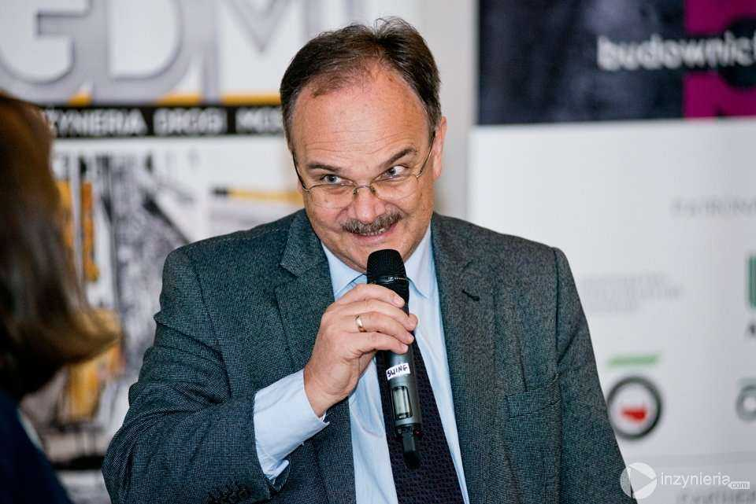
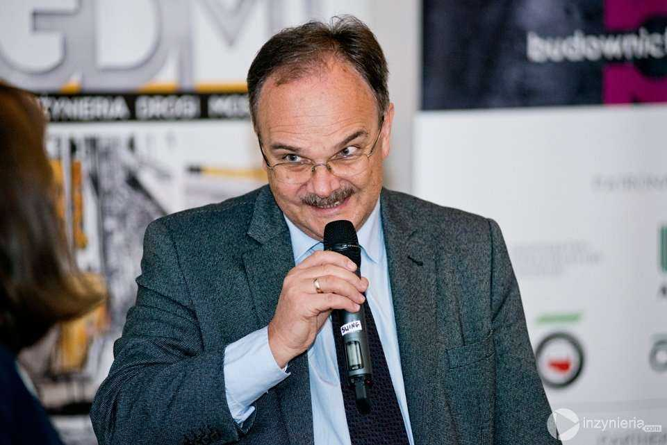

Strona troszku o mostach
W górnej części strony znajduje sie panoramiczna fotografia mostu Golden Gate z San Francisco.
Przypomona mi to że chciałbym zobaczyć Kalifornię.
Uda mi się za dwa lata
W górnej części strony znajduje sie panoramiczna fotografia mostu Golden Gate z San Francisco.
Przypomona mi to że chciałbym zobaczyć Kalifornię.
Uda mi się za dwa lata